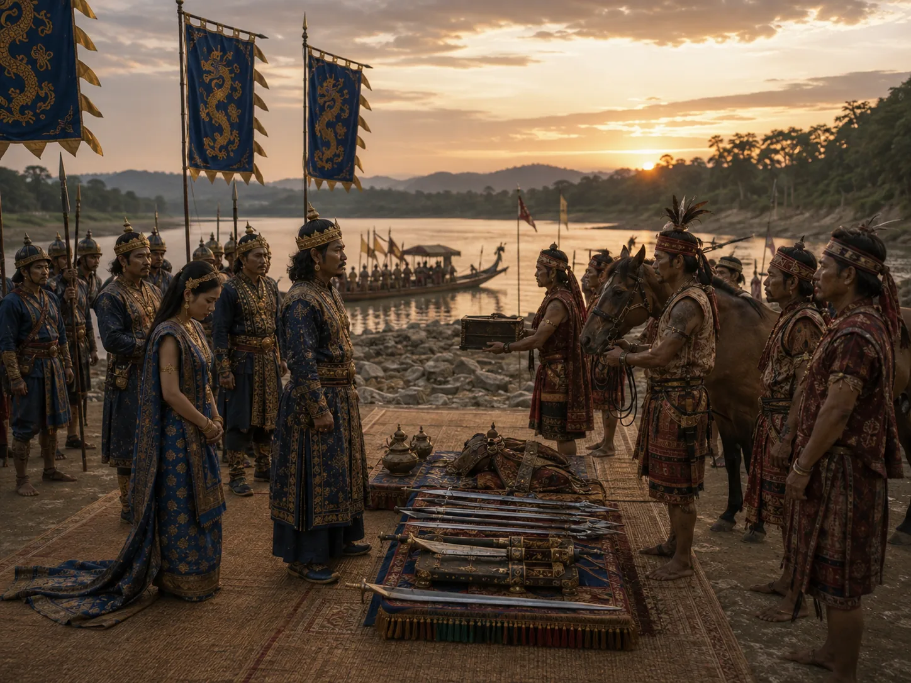

Peace Settlement with the Kacharis
1491 · The coming of Sukaphaa

Suhenphaa concludes peace with the Kachari king through tribute of royal princesses and elephants, stabilizing the southern flank.
Sources have not yet been catalogued for this record.
People: Suhenphaa